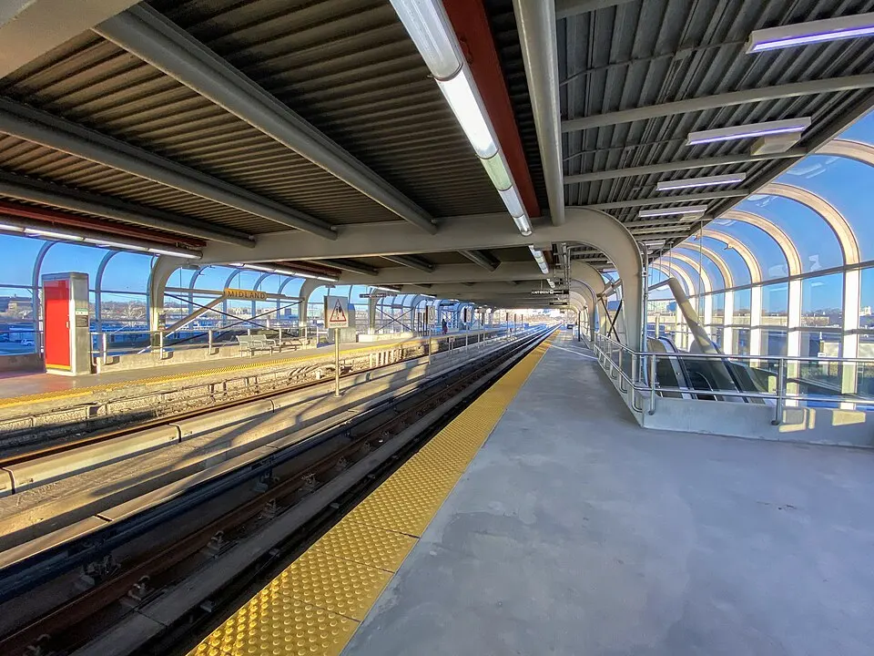

Signal
SignalStation atlas / Midland
Former station or platform
Midland


Station history
Midland was one of the six stations on the Scarborough RT at its official opening.
The last Line 3 trains ran on this date. A derailment near Ellesmere interrupted service.
The TTC confirmed permanent closure of Line 3. Midland was one of four stations that closed permanently.